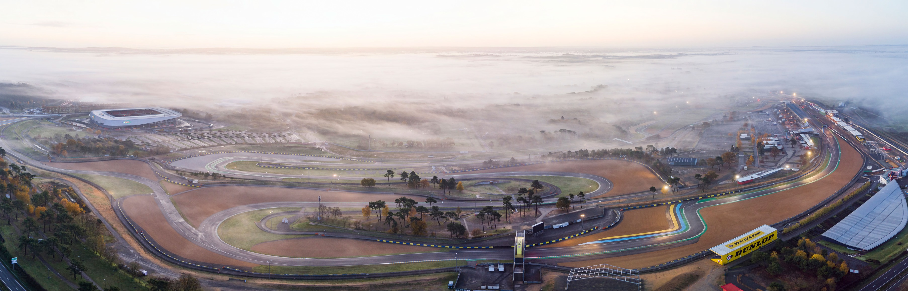

Les 24H du Mans
DÉCOUVREZ L'HISTOIRE INCROYABLE DES 24H DU MANS !
Les 24 Heures du Mans sont une compétition automobile d'endurance d'une durée de 24 heures, se déroulant en juin (généralement la vingt-quatrième semaine de l'année) sur le circuit des 24 Heures, un circuit routier du sud de la ville du Mans qui emprunte une section du circuit Bugatti. Cette épreuve, existant depuis 1923, est l'une des trois courses les plus prestigieuses au monde avec le Grand Prix de Monaco et les 500 miles d'Indianapolis.
Histoirique
En 1920, l'Automobile Club de l'Ouest, en particulier par son secrétaire général Georges Durand, œuvre à la réalisation d'une compétition dont le caractère devait contribuer à l'évolution du progrès technique et favoriser l'essor de l'automobile. En 1922, le club annonce la création d'un nouveau type de compétition dans la Sarthe, une épreuve d'endurance, alors que le Bol d'or automobile vient tout juste d'être créé. Pendant l'épreuve, des équipages de deux pilotes par voiture se relaieraient jour et nuit.
La première édition, avec trente-trois équipages, se déroule les 26 et 27 mai 1923 sur un circuit près de la ville du Mans. Elle fut remportée par André Lagache et René Léonard sur une Chenard & Walcker. Ils couvrirent 128 tours à la moyenne de 92,064 km/h. Aujourd'hui, les 24 Heures du Mans ont lieu chaque année en juin. C'est la plus ancienne et la plus prestigieuse des courses d'endurance pour automobile de sport et Sport-prototypes, elle fait partie à ce titre des différentes triples couronnes du sport automobile.
Innovations techniques
La course a servi d'expérimentation à de nombreux projets. Depuis le début, les équipes concurrentes ont innové. Le frein à disque, la jante, l'aérodynamisme, le pneu à carcasse radiale, le phare à LED, puis au laser, font partie des innovations testées au Mans.
Différents types de moteurs ont été utilisés pour gagner autant en vitesse qu'en consommation. La suralimentation commença dès 1929, longtemps avant la turbo compression, en 1974. En 1963, une auto expérimenta une turbine à gaz, alors qu'en 1970 était présenté le moteur rotatif. Les freins ont fait l'objet de nombreux essais, et les phares antibrouillard furent inventés pour la course. En septembre 2018, dans la continuité des voitures hybrides apparues en 2012, naît le projet Mission H24 qui s'est donné pour objectif de faire courir une voiture fonctionnant intégralement à l'hydrogène en 20244.
Par ailleurs, la ligne droite des Hunaudières est décrétée « laboratoire national » en 1932 par les Ponts et chaussées et, en 1933, la ligne médiane des routes françaises y est testée.
Cependant, à partir de 2021, la mise en place d'un règlement fondé sur une balance de performance (Balance of Performance (en) ou BOP en anglais) constitue un changement radical, puisque les constructeurs concourant pour la victoire ne sont plus incités à améliorer les performances de leurs voitures. Avant chaque course du championnat du monde FIA-WEC, auquel appartiennent les 24 Heures du Mans, le législateur impose à chaque concurrent des modifications pour ses voitures, tels le poids, la puissance, la quantité d'énergie (carburant) autorisée par relais, ou le seuil de vitesse en dessous duquel le système hybride ne doit pas être actionné, ceci pour que tous les concurrents d'une même catégorie restent à égalité de performances. Le développement technique des voitures n'est donc plus encouragé, et priorité est donnée à la maîtrise des coûts pour attirer de nombreuses marques.
À partir de 2023, en catégorie Hypercar, la BOP n'est plus définie à l'aide de mesures chronométriques (temps sur un tour), mais à partir de simulations faites par le législateur pour chaque voiture en début de saison. Elle est figée pour la première partie de la saison, mais, déçu par les résultats, le législateur décide de la modifier juste avant la journée test des 24 heures du Mans. D'autre part, le règlement sportif interdit aux pilotes et membres des équipes engagées de commenter la BOP dans les médias ou sur les réseaux sociaux, sous peine de sanctions.
Organisation de la course
Lorsque Le Mans se met à l'heure de la course, c'est plus d'une semaine d'événements qui s’enchaînent. Cela commence avec l'élection de Miss 24 Heures du Mans, puis se poursuit par la journée test et les deux journées de vérifications administratives et techniques, dont le traditionnel pesage des véhicules sur la place de la République. Une séance de signature d'autographes par les pilotes est organisée devant les stands, alors que les concurrents finissent la préparation des voitures qui sont exposées au public. Les essais libres et les qualifications suivent, puis c'est au tour de la journée « découverte des stands » pour le public, et la concentration du Classic British Welcome, qui présente des véhicules classiques ou de prestige à Saint-Saturnin, une commune voisine. Enfin se déroule la parade des pilotes, qui présente en centre-ville l'ensemble des équipages engagés pour la course et embarqués à bord de véhicules historiques accompagnés par des véhicules de prestige et clubs automobiles, suivi de l'inauguration d'une nouvelle plaque de bronze avec les empreintes des vainqueurs de l'année précédente. Le samedi commence avec le warm up, et depuis 2016, avec une course d'ouverture pour GT3 et LMP3 comptant pour la Michelin Le Mans Cup. Tout au long du week-end de la compétition, les animations sont nombreuses, telles les concentrations d'Arnage et de Mulsanne, la fête foraine, les concerts, démonstrations, défilés, séances d'autographes, le village et ses boutiques, les expositions, baptêmes de piste, survols en hélicoptère, karting et simulateurs, soirées VIP... et bien sûr la course.
Circuit
La piste, mesurant 13,626 km16, emprunte une partie du circuit Bugatti et comporte une grande partie de route nationale. Les passages les plus célèbres sont les virages du Tertre Rouge, Mulsanne, Arnage et la ligne droite des Hunaudières, longue de presque 6 km où les prototypes maintenaient auparavant une vitesse de près de 400 km/h pendant une minute. Cette portion du circuit a été divisée en trois lignes droites par l'installation de deux chicanes en 1990. Ces chicanes ont pour but de limiter la recherche de la vitesse maximale par des réductions d'appuis aérodynamiques trop importantes et de limiter par conséquent les différences de vitesse entre concurrents. L'envol de certains véhicules était dû à la géométrie de la piste avec un changement de plan qui pouvait créer un décrochage aérodynamique suivant leurs configurations et réglages aérodynamiques. La bosse a été aplanie pour l'édition 2001.
Le record absolu du tour le plus court est au crédit de Jackie Oliver avec une Porsche 917 en 1971, sur l'ancien tracé, bien avant la création des chicanes, avec un temps de 3 min 13 s 6 et une moyenne de 250,07 km/h17. Le record homologué de vitesse maximale atteinte sur le circuit est de 405 km/h dans la ligne droite des Hunaudières et appartient à Roger Dorchy sur WM P88 à moteur Peugeot lors des 24 Heures du Mans 1988. Le record de vitesse est en réalité de 407 km/h mais Peugeot, à des fins de communication, demanda à conserver 405 pour l'associer à la sortie de sa Peugeot 405.
Le record du meilleur tour en course appartient à André Lotterer sur Audi R18 e-tron quattro avec un temps de 3 min 17 s 475, soit 248,459 km/h de moyenne, réalisé lors de l'édition 2015.
Le tour le plus rapide de toute l'histoire des 24 Heures du Mans est au crédit de Kamui Kobayashi avec Toyota, lors des essais qualificatifs de l'édition 2017, avec un temps de 3 min 14 s 791 et une moyenne de 251,882 km/h, tour le plus court depuis l'existence des deux chicanes dans la ligne droite des Hunaudières.
Accidents
Avec les vitesses élevées qui sont associées au Mans, l'épreuve a connu un certain nombre d'accidents. Certains ont été mortels pour des concurrents, mais aussi pour des spectateurs.
Le pire moment de l'histoire du Mans est l'accident grave survenu durant l'édition du 11 juin 1955 au cours de laquelle 82 spectateurs, ainsi que le pilote français Pierre Levegh, furent tués par l'envol de sa Mercedes-Benz 300 SLR. Cependant, malgré l'accident, les organisateurs décidèrent de laisser la course continuer pour éviter que le public venu très nombreux (environ 250 000 personnes) ne s’en aille et ne bloque les routes d'accès au circuit ce qui aurait aussi bloqué les ambulances évacuant les blessés. L'équipe Mercedes retira ses deux autres voitures durant la nuit et repartit discrètement vers l'Allemagne. Ce carnage provoqua un choc dans le monde des sports automobiles, qui conduisit à la suppression de beaucoup de courses principales et mineures en 1955, telles que les Grands Prix de France, d'Allemagne et de Suisse, ce dernier pays bannissant jusqu'en 2007, toute compétition motorisée sur circuit sur son territoire. Cet accident entraîna de nouvelles réglementations sur la sécurité des pilotes et des spectateurs dans toutes les catégories de sports motorisés.
En 1967, le pilote Jacques (Roby) Weber est décédé à la suite d'un accident survenu lors des essais préliminaires. Sur la ligne droite des Hunaudières, à environ 250 km/h, sa voiture a effectué une série de tonneaux sur une distance de 135 m, a pris feu, puis s'est immobilisée, les roues en l'air. Le personnel a attaqué le feu avec des extincteurs, a retourné la voiture et extrait la victime. L'autopsie a révélé que la mort était consécutive à un traumatisme crânien.
En 1986, Jo Gartner se tua au volant d’une Porsche 962C, brisée sur les barrières dans la ligne droite des Hunaudières. Il y eut un autre décès en 1997, celui de Sébastien Enjolras sur WR lors des essais préliminaires, à la suite de l'envol de sa voiture, retombée sur le rail de sécurité. Le dernier accident mortel en date eut lieu le 22 juin 2013, après seulement dix minutes de course. Allan Simonsen décéda à la suite de la perte de contrôle de son Aston Martin dans le virage rapide du Tertre Rouge. Inconscient après le choc, il mourut dans l'hélicoptère le menant à l'hôpital.
Au cours de l'édition 1999, les Mercedes-Benz ont été victimes d'une série d'accidents qui auraient pu avoir des suites plus graves. La CLR Mercedes-Benz de 1999 souffrait d’une instabilité aérodynamique qui en provoquait l'envol sous certaines conditions. Après une première alerte le jour des qualifications, où la CLR no 4 conduite par Mark Webber décolla de l'avant et s'immobilisa le long des rails, Mercedes déclara avoir résolu le problème. Cependant, lors du « warm up » quelques heures avant la course, la même voiture, réparée avec le même pilote, s'envola et se retrouva sur le toit. Un nouvel accident se produisit en course. La CLR no 5 de Peter Dumbreck s’envola à plusieurs mètres de hauteur en tournoyant, passa au-dessus des rails de sécurité, et atterrit dans les bois. Aucun conducteur ne fut sérieusement blessé dans ces trois accidents, mais Mercedes-Benz retira rapidement la voiture restante en course et, par la suite, arrêta son programme de développement de voitures de type sport-prototype.
Catégories
Les voitures qui participent à cette épreuve sont réparties en plusieurs catégories (« LM » signifie « Le Mans » ; « LM P » « Le Mans Prototype » ; « GTE » « Grand tourisme Endurance » ; « Pro » « professionnel » ; et « Am » « amateur ») :
À partir de l'édition 2021, une nouvelle catégorie, Le Mans Hypercar, remplace la catégorie LMP123. En 2023 apparaîtra la catégorie LMDh, obligatoirement dotée d'un système hybride standard et reprenant la réglementation châssis de la catégorie LMP224.
À partir de 2021, la mise en place d'une « Balance of Performance » à l'intérieur des catégories les plus élevées (Le Mans Hypercar, puis LMDh en 2023), de manière à égaliser les performances de tous les concurrents appartenant à une même catégorie, constitue un tournant fondamental dans la philosophie de la compétition.